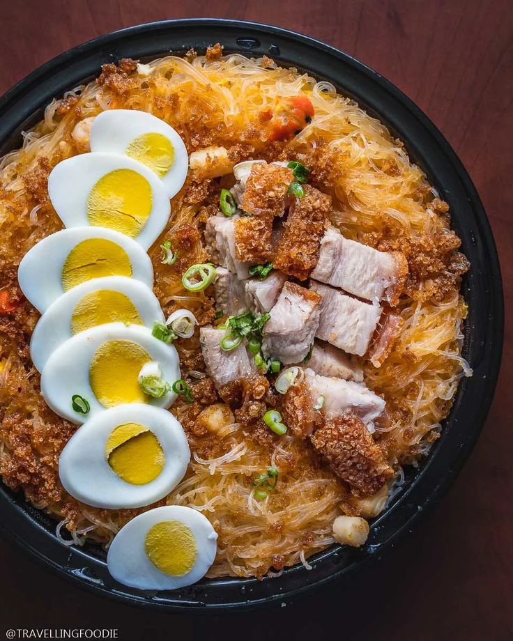

|  |
I have so many like food and even choosing my top 3 food is
difficult to me, but here are my top most favorite of all times
and i think it is because I eat them alot and afford it lol— but my favorite favorite is pancit
not only it's make your life longer, it is also delicious especially if my dad cook it.
|